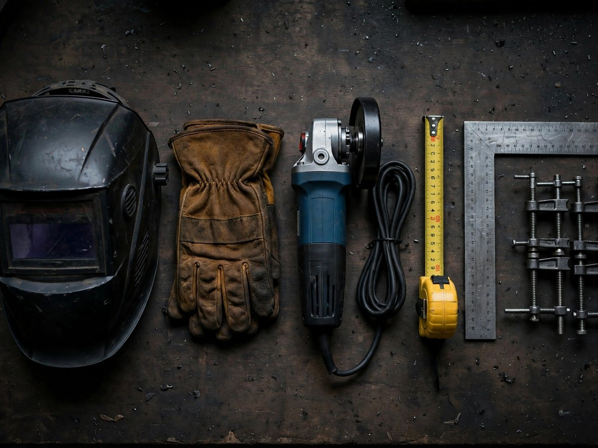

Project-focused
Start with scope and intended application.
ABOUT SENSERIO
Senserio provides welding, custom metalwork, and fabrication solutions for construction, architectural, commercial, and custom projects in Vancouver and the Lower Mainland of British Columbia.
The focus is on practical solutions, clear communication, and workmanship aligned with the needs of each project.
Discuss Your Project →
OUR APPROACH
Each enquiry is considered individually. Project scope, schedule, access, materials, qualifications, and any applicable engineering requirements are confirmed before work is agreed.
Start with scope and intended application.
Review conditions and requirements before suggesting an approach.
Keep quotation and coordination discussions direct.
Consider dimensions, materials, fit, and finish.
Confirm what is included and what needs separate review.
Detailed company history, team information, credentials, and completed project information will be added when verified and approved by the owner.
Share the project scope and the information available.